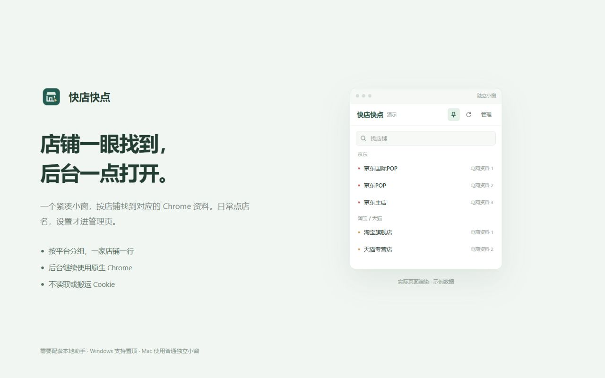
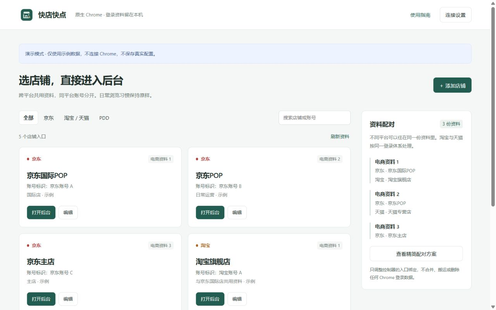

资料少一点
3 个京东账号 + 2 个淘宝账号，可规划为 3 份资料。不同体系可复用，同体系不同账号分开；淘宝与天猫按同一体系处理。
CHROME 商店已发布 · MIT 开源
不用再从一长串 Chrome 头像里找入口。
把京东、淘宝／天猫、拼多多后台，放进一个紧凑小窗。
保留原生 Chrome · 不读取或搬运 Cookie · Windows 可置顶 / Mac 普通小窗
真实产品界面，搭配示例店铺数据。使用时需安装 Chrome 扩展与配套本地助手。

扩展负责店铺小窗；本地助手负责打开指定 Chrome 资料。先从商店安装扩展，再选一个与你电脑匹配的助手。
快店快点 · Chrome 商店正式入口版本 1.0.0 · 无需开发者模式 · 通过商店正常更新以上助手绑定正式商店 ID。旧 v1.0.0 Release 的助手绑定开发者模式 ID，请勿混用。Chrome 116+，建议最新稳定版。助手自带 .NET 10，无需另装运行时；macOS 版本还须处于 .NET 10 支持范围。
Chrome 商店发布不代表本地助手已获操作系统签名、公证或安装验收。目前助手未做 Windows 代码签名、Mac 签名／公证；Mac 包未完成实机安装验收。真实 Chrome 联调、Windows 置顶和 GPT 跨资料控制也仍需实测。
系统可能提示未知发布者或阻止运行。请核对来源、文件摘要并遵循设备策略，不关闭 Gatekeeper、防病毒或其他系统防护。摘要校验不等同于代码签名。
Install.cmd；Mac 运行 Install.command。已有旧公测版时，请按下方迁移步骤显式换绑。出现系统拦截时按设备策略处理，勿关闭防护。https://example.com/ 测试两份资料，再配置真实后台并核对账号。商店扩展 ID：ckeiapojbffhmmedjajdbnpfongmfjmm。扩展通过商店正常更新；助手需单独下载新版安装。
旧开发者模式 ID：hadeebhijljjdebkaiaglaeipajnnind，与商店版不同。只安装新扩展、继续用旧助手会连接失败。
config.json 与存在的 .bak，在 chrome://extensions 中停用旧已解压扩展。Install.cmd --replace-identity（PowerShell：.\Install.cmd --replace-identity）或 Mac ./Install.command --replace-identity。普通重装不会覆盖旧身份。3 个京东账号 + 2 个淘宝账号，可规划为 3 份资料。不同体系可复用，同体系不同账号分开；淘宝与天猫按同一体系处理。
这是入口控制器，不会把多个资料合成一个窗口，不自动整理旧标签，不判断登录店铺。点击后仍需在真实后台核对账号。
保存店名、昵称、地址和绑定；不读取 Cookie、密码或历史数据库。无产品自建云同步、广告或遥测。
不换浏览器、不开放调试端口。其他插件仍需按资料分别安装和连接，GPT／Codex 跨资料控制尚未做兼容性实测。

旧 v1.0.0 Release 保留未打包扩展和同渠道助手，供开发用途。解压名字含 extension-unpacked 的包，保留目录与公开 manifest.key，在 Chrome 开发者模式加载。此版本手动更新，不通过商店自动更新；助手需绑定对应的旧 ID，不与商店版混用。